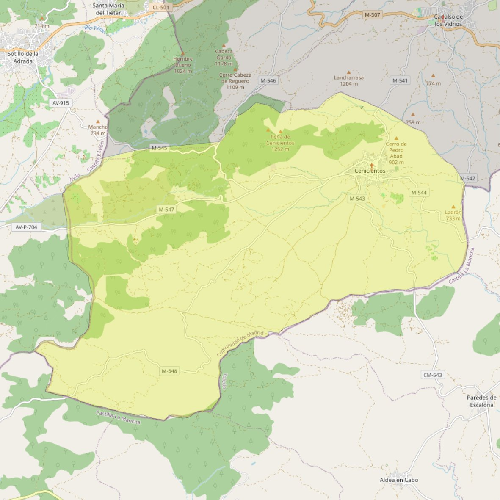

San Esteban Protomártir

- Arciprestazgo
- San Martín de Valdeiglesias
- Población
- Cenicientos
- Dirección postal
- c/ Ermita, 1
- Código postal
- 28650
- Extensión
- 68,14 km² (6.814 ha)
- Teléfono
- 918 652 402
- Correo electrónico
- Juana.@florez.alvarez@gmail.es